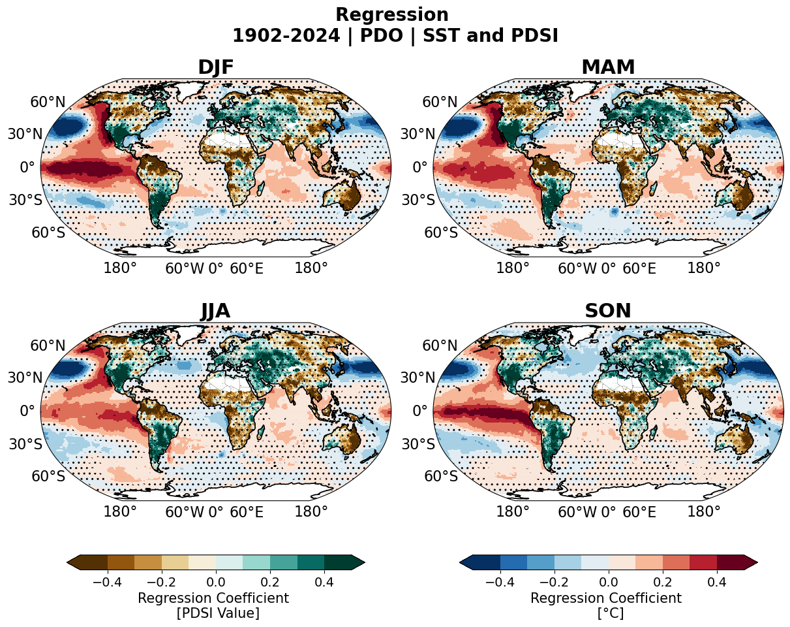
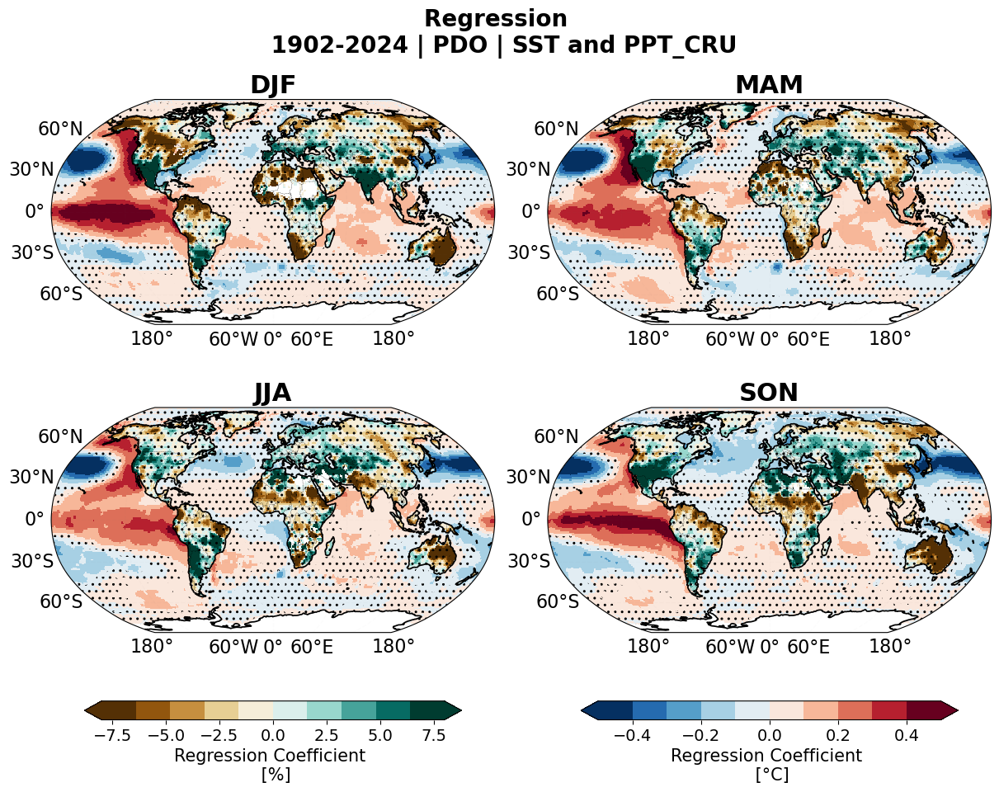
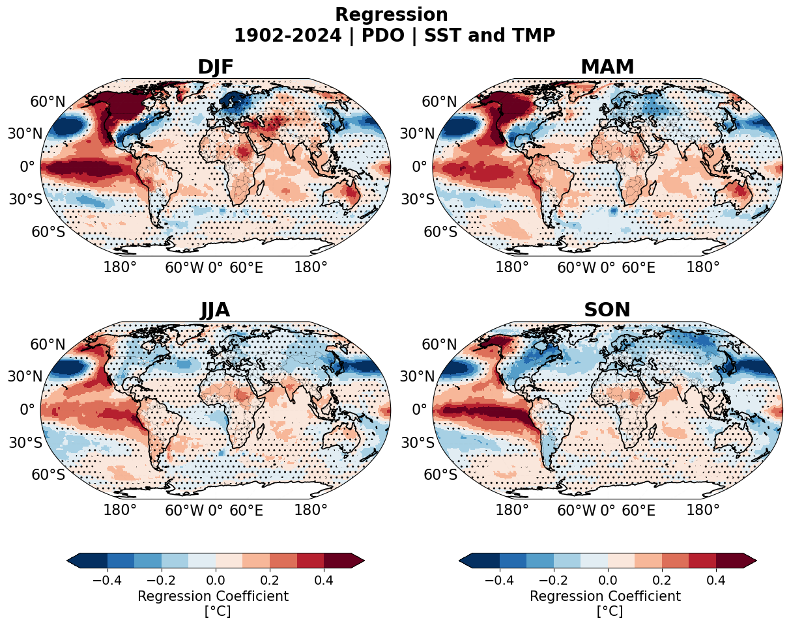
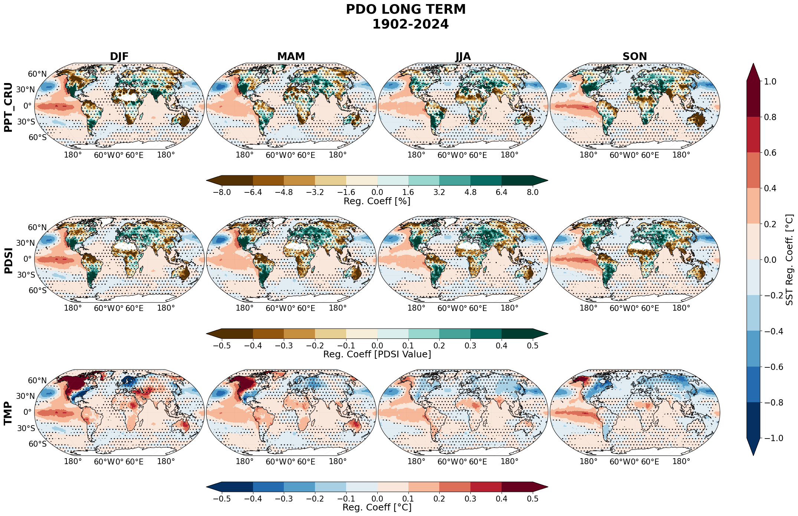
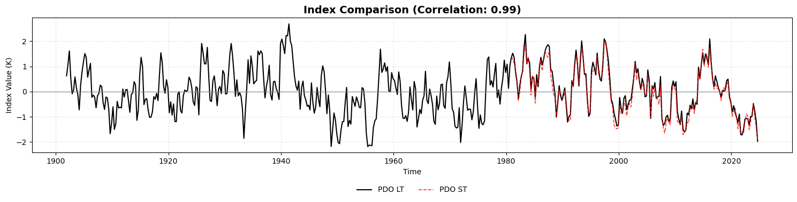
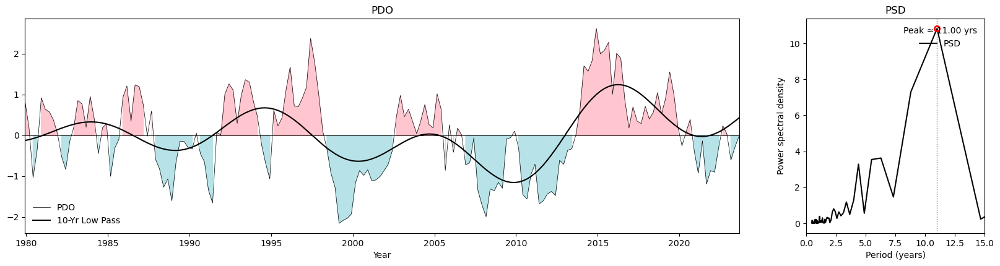

PDO Long Term
1901–2024
Index Comparison
PDO Index and PSD (Long-Term)
Teleconnection Maps
Explore PDO impacts on hydroclimate over the century-plus record.




Analyze the influence of PDO on global hydroclimate variability.

PDO Index and PSD (Long-Term)





PDO Index and PSD (Short-Term)